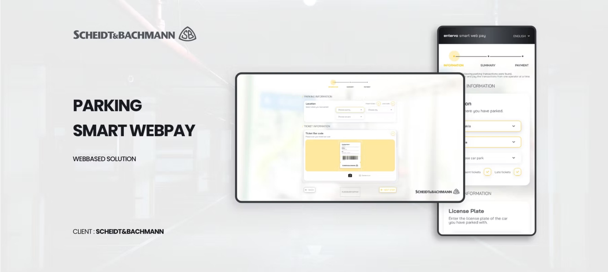
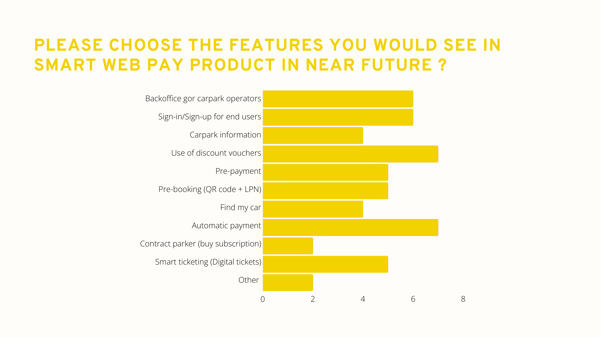
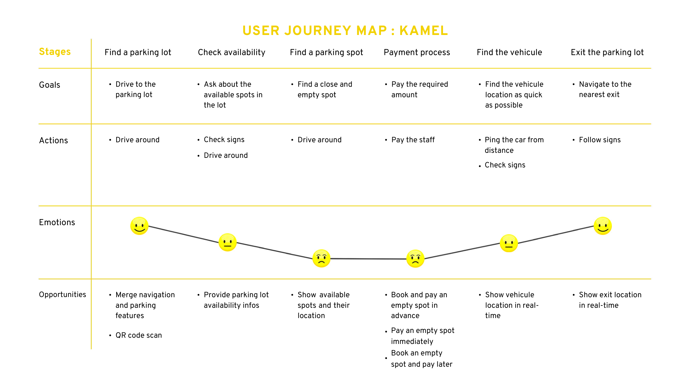
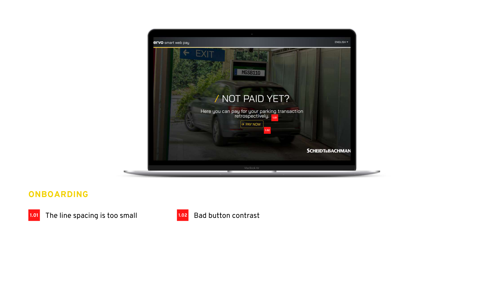
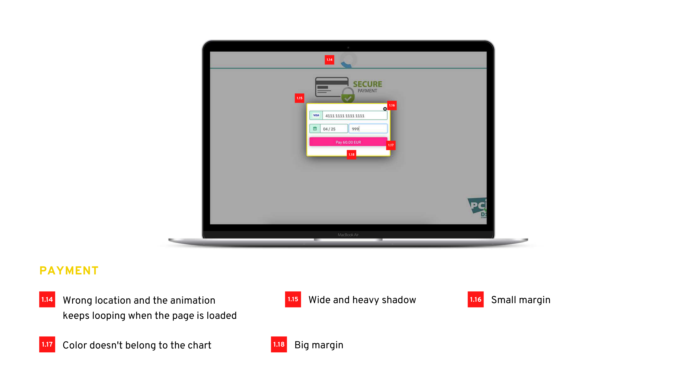
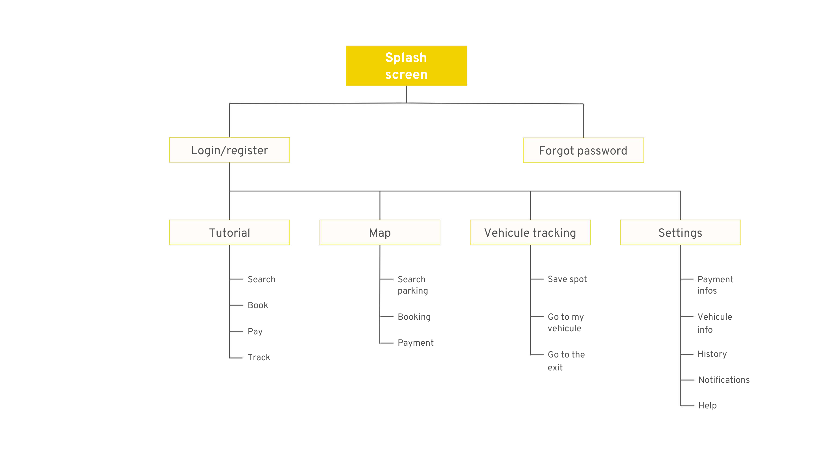
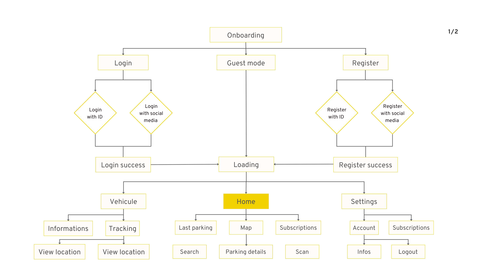
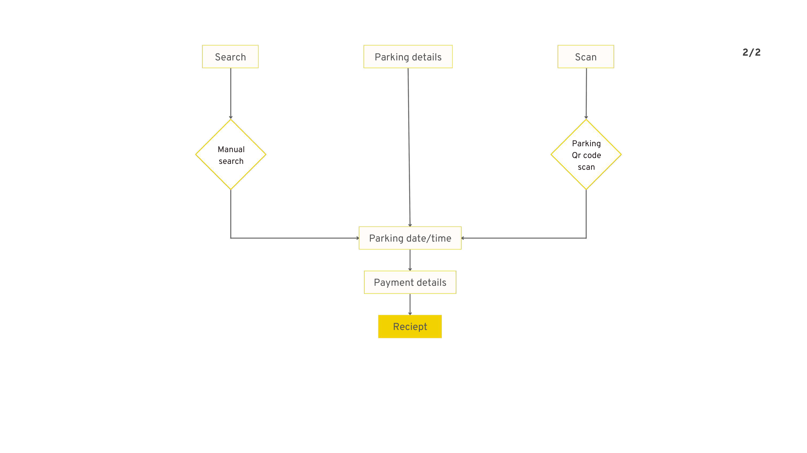
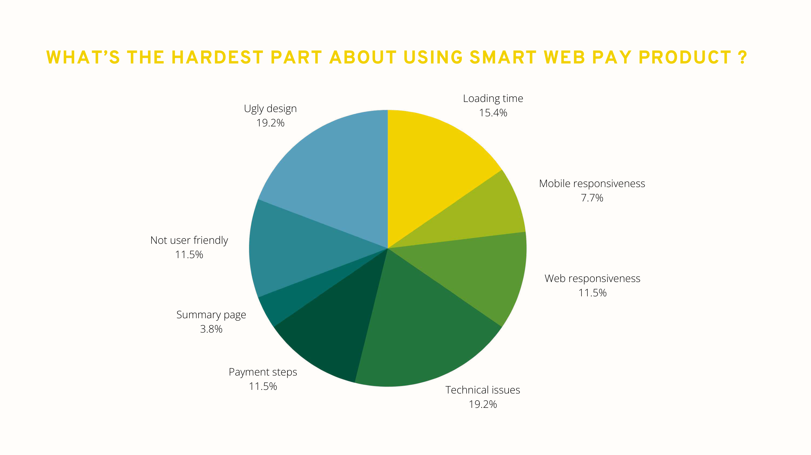
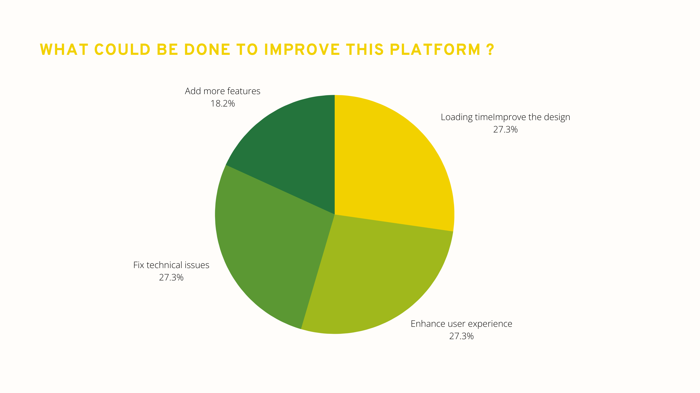

Case study
SCHEIDT & BACHMANN
Reframing Smart Web Pay as a clearer, faster, and more credible parking payment product.
Smart Web Pay was not just a screen-redesign exercise. It was a full product UX investigation covering strategy interviews, market signals, competitor review, personas, journey mapping, product-reaction surveys, and a detailed UI audit. I used that evidence to reshape the payment experience around clarity, mobile responsiveness, and trust at the exact moments where users are most likely to hesitate.

Why this project mattered
Parking payment is a time-sensitive service problem. Users are often on mobile, already in transit, and unwilling to tolerate ambiguous costs, weak feedback, or technical instability. If the experience looks unreliable, the product stops feeling useful immediately.
The business challenge was broader than visual polish. Stakeholders were thinking about market fit, future features, onboarding more carparks, and making the product more competitive in regions where people already had alternatives like FlashParking, J-Pass, JustPark, Parkmobile, and SKIDATA.
My job was to connect those two realities: make the current payment journey easier to trust and complete, while also defining a stronger product direction that could scale into booking, subscriptions, tracking, and smarter digital parking services.
Role & scope
What I owned
A payment redesign grounded in strategy, research, audit, and product structure.
I worked across the full UX scope: stakeholder framing, survey design, competitor benchmarking, persona building, empathy mapping, journey mapping, UX audit, information architecture, user flows, and the resulting interface direction. This meant treating the work like a product definition exercise rather than only a visual redesign.
Stakeholder and market framing
Defined interview goals, gathered cross-market input, and clarified how Smart Web Pay was expected to compete, expand, and win adoption in different regions.
User research and scenario building
Built personas, empathy maps, scenarios, and user journeys to understand where parking stress begins, how payment friction shows up, and what users need before, during, and after a transaction.
Evidence-based interface diagnosis
Documented concrete UI issues across onboarding, information, summary, payment, error, and success states, then translated them into a prioritized guideline matrix.
Information architecture and flow definition
Mapped the product structure from splash and onboarding through search, booking, payment, tracking, notifications, and help, so the redesigned experience would support expansion instead of patchwork growth.
UX/UI recommendations ready for product decisions
Converted the research into concrete design priorities such as simpler payment hierarchy, stronger responsive behavior, better transaction feedback, more payment options, and cleaner service states.
Challenge
Research signals
The problem was not just “make payment cleaner.” It was “make the product more trustworthy, more sellable, and more useful across real parking contexts.”
The source deck showed three problems at once. First, the current experience had obvious UI and responsiveness issues. Second, the product opportunity was larger than payment alone: people wanted booking, real-time support, vehicle tracking, digital tickets, and subscriptions. Third, the business needed Smart Web Pay to feel like a serious B2C product, not a narrow utility with weak first impressions.
The research exposed a product under tension. Users wanted faster parking, simpler payment, and better guidance. Stakeholders wanted broader sellability, future-service expansion, and a stronger competitive position. The redesign had to serve both.
Time pressure was built into the use case
Personas and scenarios showed users paying while heading to meetings, events,
or daily routines. Delay, uncertainty, or long queues directly damaged the
overall service perception.
Context
The current product created doubt at critical steps
Demo feedback surfaced technical issues, weak mobile responsiveness, unclear
payment steps, poor summary design, and distrust caused by UI inconsistency.
Issue
The roadmap already extended beyond payment
Stakeholders expected backoffice capabilities, pre-booking via QR code and LPN,
automatic payment, subscriptions, digital tickets, vouchers, and car finding.
Roadmap
Product perception was fragile
In reaction questions, only 12.5% said they would keep using the platform,
50% answered maybe, and 37.5% said no. The redesign needed to restore
confidence before it could meaningfully drive adoption.
Risk

Roadmap evidence from the source deck
The feature-prioritization pages in the research deck made it clear that users and stakeholders were not asking for a prettier payment page in isolation. They were asking for a broader parking service product: pre-booking, subscriptions, smart ticketing, better carpark information, voucher support, vehicle recovery, and automatic payment.
That matters from a product-management point of view. If the architecture is weak at the payment layer, it becomes much harder to scale the product into a multi-service offer later. So the redesign had to improve the current flow while also establishing a better foundation for future service modules.
User problem
Kamel, Yasmine, and Slim represented three important realities: the punctual professional who wants zero friction, the user trying to avoid being late and wasting money, and the quality-sensitive digital user who abandons quickly when responsiveness or UI credibility feels weak. Across all three, the recurring need was the same: save time, reduce uncertainty, and make payment feel reliable.
Their journey maps showed specific opportunity points: display availability before arrival, make spot-finding more guided, support booking before entering the lot, simplify payment immediately or later, and help users relocate their vehicle or find the exit.
Business problem
The business needed Smart Web Pay to feel market-ready across regions with different parking behaviors and competitive expectations. Stakeholder concerns around pricing, deployment, complicated UX, and the fragmentation of multiple apps pointed to a broader product challenge: Smart Web Pay needed a clearer value proposition, a better first impression, and a more coherent roadmap story.
In other words, conversion and positioning were linked. If the product felt slow, clumsy, or visually inconsistent, it weakened both the immediate payment journey and the larger commercial narrative around onboarding more carparks.
Persona insight that shaped the redesign
The deck’s three personas were useful because they exposed different kinds of failure. Kamel represented the repeat user who values speed and hates operational waste. Yasmine represented the user whose lateness and stress are tied directly to parking friction. Slim represented the quality-sensitive digital user who leaves immediately when responsiveness and interface quality feel poor.
That mix told me the experience could not optimize for only one persona type. It had to serve repeat users, urgent users, and quality-sensitive users at once. In practice, that means fewer ambiguous steps, more predictable summaries, less visual noise, and a stronger sense that the system is under control.
What the survey data really said
The survey results were not subtle. Respondents asked for minimum clicks to payment, ease of use, modern design, and basic completeness. Product-reaction answers later reinforced the same pattern: technical issues, loading time, responsiveness, and weak payment steps were hurting trust and continuity.
That is important from a product angle because it means the redesign brief was not only aesthetic. It was a usability-and-adoption problem. The right solution was to simplify the path, reduce recovery friction, and make the product feel more stable and commercially credible.
Process
Research to redesign
I used the deck as a product-definition tool, then translated it into clearer architecture and interface priorities.
The most valuable part of the work was not a single mockup. It was the sequence of evidence: stakeholder strategy, competitive review, personas, scenario logic, survey data, a detailed audit, and finally information architecture and user flows. That sequence made the redesign decisions defensible and gave the product team a much stronger basis for what to fix now versus what to build next.
Defined research goals with the business first
Started by clarifying market expectations, product vision, success criteria, and stakeholder concerns so later user research would stay tied to business realities.
Benchmarked the category across 9 reference products
Reviewed services such as SKIDATA, DESIGNA, J-Pass, JustPark, FlashParking, Mawgif, AAATap, HONK, and Parkmobile to understand payment expectations, booking patterns, and service breadth.
Mapped personas, empathy, and full parking journeys
Built user stories around lateness, queue stress, unsupported payment methods, weak optimization, and the need for availability, booking, and vehicle tracking.
Converted product reactions into design priorities
Feedback showed the hardest parts were technical issues, visual quality, loading time, weak responsiveness, and payment-step complexity, so those became the primary redesign targets.
Ran a granular UX audit and guideline matrix
Documented detailed issues such as weak contrast, oversized shadows, poor spacing, missing transaction time, looping animation, weak button design, poor icon treatment, and error-state layout problems.
Reframed the product structure through IA and user flows
Defined the service from onboarding to search, booking, payment, tracking, notifications, and help so Smart Web Pay could behave more like a coherent product ecosystem.




What changed in the redesign direction
The final design direction focused on making the payment sequence easier to read and safer to continue. That meant displaying process steps before the main action, cleaning up margins and spacing, reducing decorative shadows, improving button contrast, simplifying summary and payment screens, and making status feedback feel more deliberate instead of ornamental.
The audit also made several tactical issues obvious: avoid captcha where possible, add more payment methods, lighten the receipt design, fix mobile and Ubuntu responsiveness, add show/hide controls where needed, and stop unnecessary looping motion that distracts from the transaction itself.
Why the IA and flow work mattered
One of the biggest lessons from the deck was that Smart Web Pay was already growing beyond a single payment moment. The information architecture included map, tracking, search, booking, settings, notifications, help, payment info, history, and exit guidance. Without a clear structure, those features would eventually make the product harder to understand instead of more valuable.
By treating the redesign as both a service flow and a system architecture problem, I could make decisions that improved the current transaction while also preparing the product for future modules like subscriptions, digital tickets, and stronger carpark operations support.
Onboarding and information screens needed basic readability fixes
The deck highlighted small line spacing, bad button contrast, heavy shadows, inconsistent vertical alignment, and missing breathing room. Those are not cosmetic details in a transactional product; they directly affect scan speed and confidence.
The summary layer was not doing enough to reassure users
Missing transaction time, too much empty space, too few payment methods, and weak card treatment made the review step feel unfinished. The redesign needed to turn summary into a confidence checkpoint, not just a transitional screen.
The most important screen had the most trust issues
The audit called out wrong animation behavior, weak chart consistency, bad button design, poor icon contrast, and the lack of show/hide behavior. Those are exactly the moments where users decide whether the product feels safe to continue with.
The redesign had to define a repeatable UI language
Spacing, borders, shadows, button treatments, and message hierarchy needed consistent rules so the product could grow into booking, tracking, notifications, and subscriptions without becoming even more fragmented.




Outcome
UX and product impact
The redesign created a stronger payment flow and a stronger product story at the same time.
The clearest outcome was strategic: Smart Web Pay no longer had to be discussed as a narrow payment screen with UI issues. The work reframed it as a multi-step parking service with clearer opportunity areas, a stronger architecture, and a more credible user experience direction for future rollout.
UX outcome
The design direction became easier to scan, easier to trust, and better adapted to the real context of use. Instead of relying on visual heaviness and unclear spacing, the redesigned structure prioritized simpler steps, stronger contrast, cleaner summaries, and more explicit state changes. That directly supports the kinds of users represented in the research: people in a hurry, people trying to avoid stress, and people quick to abandon when a product feels technically weak.
More specifically, the redesigned direction improves the parts of the journey that research showed were most fragile: first comprehension, summary confidence, payment reassurance, and post-action clarity. Those improvements matter because a user can forgive a limited feature set sooner than they forgive uncertainty during a live payment.
Product outcome
Product-wise, the case study did more than fix UI defects. It created a clearer roadmap language: booking, QR and LPN pre-booking, subscriptions, digital tickets, automatic payment, car finding, and stronger PSP flexibility. That gives business stakeholders something more useful than a redesigned screen set. It gives them a structured view of what the product can become and which service gaps matter most.
It also creates a cleaner product conversation with stakeholders. Instead of debating isolated screens, teams can now talk about service capabilities, market competitiveness, roadmap sequencing, and the UX foundations required to support future carparks and payment-service integrations.
What I would measure next
If this redesign moved into delivery, the next metrics I would track are time-to-payment, abandonment rate by step, mobile vs desktop completion, failure rate in payment and summary states, support requests tied to unclear status, and adoption of new features like pre-booking or digital ticketing.
I would also track the business-facing side of the redesign: how many carparks can be onboarded without custom UX exceptions, whether stakeholders see the product as more sellable after the redesign, and whether the experience can support more PSPs and service add-ons with less implementation friction.
What this case says about my work
This project is a good example of how I operate as a UX designer with product instincts. I did not treat research, audit, IA, and UI as separate activities. I used each one to reduce ambiguity, align business intent with user reality, and turn a scattered service experience into a clearer product system teams can actually build on.
It also shows how I work as a product-minded designer: I use research to frame the opportunity, identify which problems are interaction problems versus product structure problems, and then move from evidence to a design direction that teams can defend, prioritize, and ship.
Parking payment is a service-design problem, not just a payment-screen problem
The strongest solution came from connecting pricing, timing, availability,
booking, navigation, tracking, trust, and technical reliability into one coherent
flow. That is what made the work product-oriented rather than purely visual.